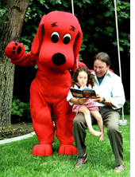

Clifford's
Big Idea: Be a Good Friend
Coping with the Loss of a Loved One
As
we remember the gracious talent that brought a spirited voice
to Clifford's cartoon character, let us never forget how precious
time is... time watching a simple cartoon or reading a favorite
book, especially when it's with someone we love. Thank you, John,
from the bottom of my heart.
Respectfully, Teri Vestal
(Contributing Writer,
Clifford
The Big Red Dog)
Related article: Remembering a Good Friend:
A Tribute to John Ritter
For parents/caregivers: Experiencing the loss of a family member, good friend, or classmate can create feelings of anger, denial, depression, and confusion in young children. Your child may or may not have a good understanding of what happens when someone dies. Don't be afraid to ask simple questions to find out how your child perceives death. His or her responses will help you to know how much information needs to be shared in order to comfort emotions or clarify issues about this sensitive subject. Opportunities to respond to questions like "How do YOU feel about (person's) passing?" or "Do you understand what happened to (person)?" will give both you and your child the chance to communicate your individual feelings about losing someone special.
Like adults, children handle stress and loss in different ways. They may cry excessively, become easily agitated, experience nightmares, or show little emotion, perhaps causing you to wonder if they are upset at all. Share with your child that grief, or hurting for someone else that is lost forever, is a normal emotion and a reality of life. As you spend time together, consider using the following ideas to help your child better understand his or her own emotions and concerns after the passing of a loved one.
- Encourage your child to deal with personal feelings in healthy ways by sharing favorite memories, creating art, writing letters, and performing acts of kindness for someone else.
- Playing is a natural, healthy way for children to deal with emotional stress. Allow your child "space" to enjoy favorite toys, friends, and relaxation activities like watching cartoons or spending time with a favorite pet.
- Become aware of teachable moments in everyday life that can help you better prepare your child for dealing with challenges, change, or the loss of a loved one. Nature itself can present age-appropriate opportunities for meaningful conversations about life cycles, the natural progression of aging, and the sensitive issue of death.
For young children: Everyone needs a good friend, especially when someone special moves away, gets sick, or dies. No one knows more about how to be a good friend than Clifford and his pals on Birdwell Island! Good friends make playtime fun. Good friends make us laugh when we are sad, worried, or afraid. Being a good friend is one of the best ways we can show love and respect for someone else. Think about a time when you needed a good friend. Who was it? What did they do to make you feel better?
Show someone special what a good friend you are by using these ideas:
For a friend in the hospital:
- Clowning Around - Spread some cheer making silly faces by playing with props like big noses, wigs, face paint, big ears, mustaches, glasses, etc.
- Bedside Picnic - Prepare a picnic basket filled with your favorite books, videos, and doctor approved snacks for a fun beside picnic.
- Share-a-Heart - Cut out colorful paper hearts together. Write loving messages to share some heartfelt surprises with other patients and hospital staff.
- Get-Well Chain - Cut out 3x6 inch strips of colorful construction paper. Gather friends to write and draw get-well messages on strips. Add stickers and glue on small wrapped candy treats. Staple strips together to make a one-of-a-kind "Get-Well Chain"... sure to brighten up any hospital room décor!
For a friend who has lost a loved one:
- Pillow Pals - Show a friend that has lost someone special that they are being thought of during this time by gathering friends to write kind messages on a "friendly" pillowcase. Fill the pillowcase with treats, books, toys, games, etc. Gather open end and tie with a colorful bow.
- Just the Two of Us - Invite your friend over to join you in some light-hearted activities like cooking, coloring, and watching cartoons.
- Planting Love - In memory of someone special, invite your friend to join you in planting a small tree, shrub, or perennial variety of plant. This will give you both something full of life throughout the seasons to care in memory of someone special.
- Memory Maker - Remember someone special by creating a journal, photo album, or illustrated collection of drawings. Write about fond memories and sincere thoughts associated with this person. Be sure to sign and date each entry.
Reading for the Heart: Sometimes, a book can say it all. In times of hurt and uncertainty, sharing age-appropriate messages of hope and love can help support the process of coping with the stress and loss of losing a loved one.
Suggested books for ages 4-8:
- The Day I Saw My Father Cry by Bill Cosby (Scholastic)
- Dog Heaven by Cynthia Rylant (Scholastic)
- Nana Upstairs and Downstairs by Tommy dePaola (Penguin Putnam Books for Young Readers)
- The Memory String by Eve Bunting (Houghton Mifflin Company)
- Help Me Say Goodbye: Activities for Helping Kids Cope When a Special Person Dies by Janis Silverman (Fairview Press)